Introduction to Git & GitHub
Vicky Rampin

1st Thing: Git != GitHub
Git is a revision control system, a program to manage your source code history. It is strictly a command-line tool.
GitHub is a website where you can upload a copy of your Git repository. It allows people to collaborate via Git along with some other features.
What is Version Control?
From Wikipedia: "the management of changes to documents, computer programs, large web sites, and other collections of information."
Basically, it's a way for us to compare, restore, and merge changes to our stuff.
Why Version Control?
To avoid this:

Where do we see version control?
If you've collaborated via Google Docs, Sheets, or Slides, you have used version control!

Basic Git Overview
The purpose of Git is to manage a project, or a set of files, as it changes over time. Git stores this information in a data structure called a repository.
A Git repository contains, among other things, the following:
- Snapshots of your files (text, images, whatever)
- References to these snapshots, called heads
The Git repository is a hidden sub-folder in your project folder, called .git. You probably won't have to touch this ever.
Basic Git Overview: Branches
Git works on branches, which represent independent lines of development, as each snapshot is linked to a 'parent' one it built upon. By default, everyone's repositories are on a "master" branch.

We won't go over this in class, but this tutorial (where the above img came from) and this tutorial are really great.
How Git Does Version Control
There are 3 states that your objects can be in:

How Git Does Version Control
When you add objects, you are telling Git that you made changes you want to track.

How Git Does Version Control
When you commit your changes, you tell Git that it is the latest version of your objects.

Why GitHub?
GitHub is an easy way to collaborate with others on shared Git repositories. GitHub will host it for us, and we can then sync our local copies with changes made and pushed to the shared one.
It's also the number one website for "social coding" and collaboration now...
We are going to start in GitHub, and then work locally on our own computers!
Creating a Repository
When you are logged into github.com, you should be able to see a + sign in the top right-hand corner.
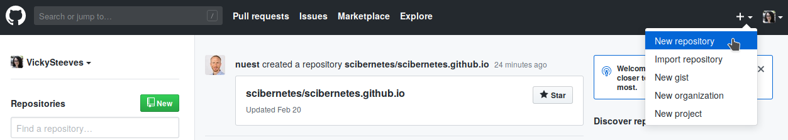Creating a Repository
Name your new repository hello-world, initialize it with a README, and hit "Create Repository":
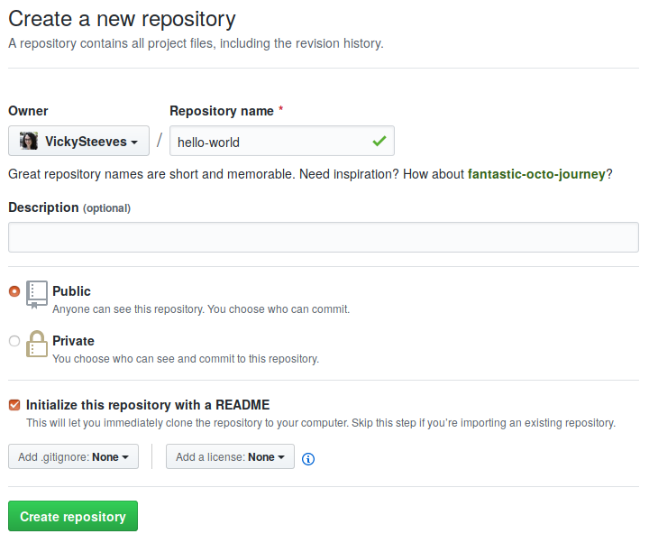Yay, you have an almost blank repo!
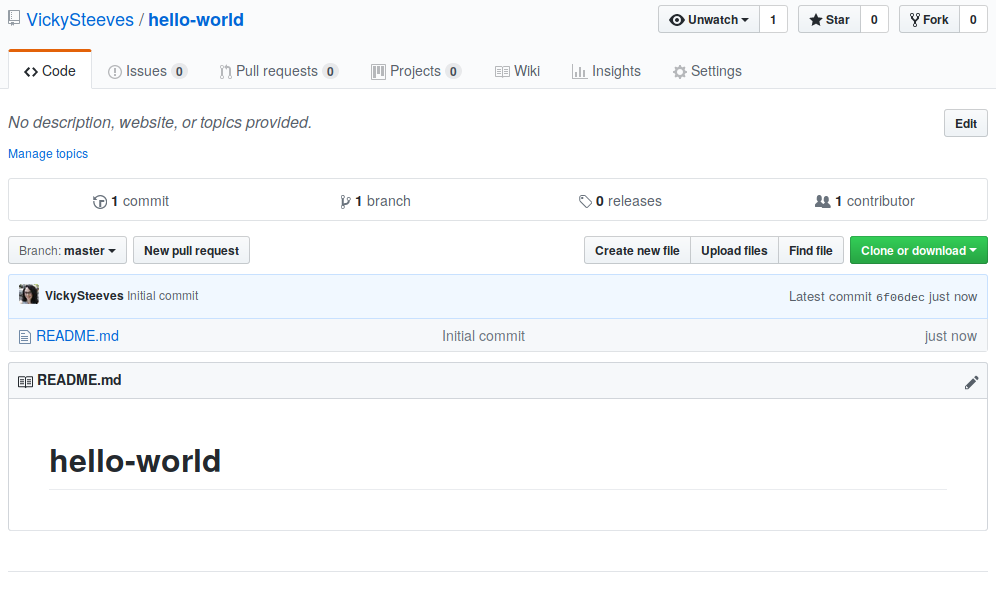Let's add some content in-browser
Please click the pencil icon for your README -- let's add some better description here.
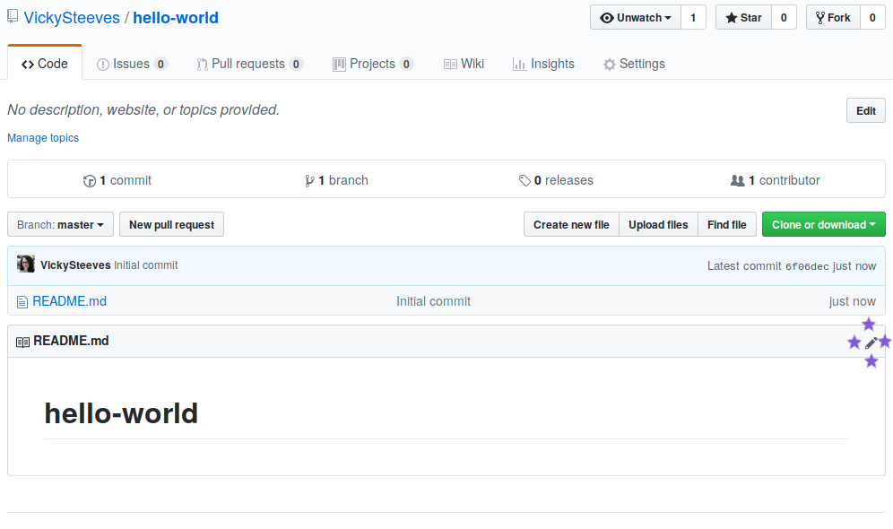What's a README?
A README file broadly contains information about other files in a directory. It is usually in a plain text format, like markdown (.md) or text (.txt). It typically contains:
- TITLE/SUMMARY: What does your project do? How is it used?
- AUTHORS: Credit the people working on the project :)
- GETTING STARTED: installation & dependency instructions
- LICENSE: copyright and licensing info
- CONTRIBUTING: guide for people who might want to contribute to the project
- THANKS: acknowledge those who made it possible!
Editing the README
So add at least a sentence or two in your README file -- if you're not familiar with Markdown, it's basically a way to format plain text. Click the preview tab to see how your changes look before we commit to them:
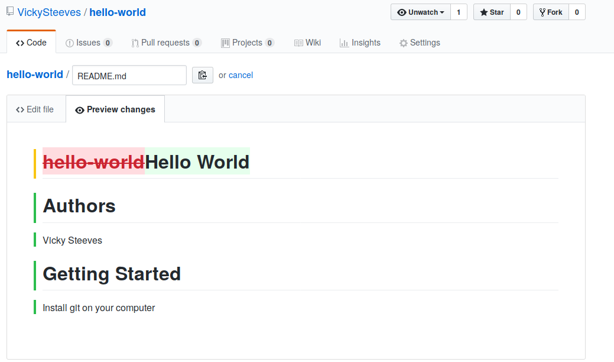Committing changes in-browser
Remember how we looked at how git does version control? Since GitHub relies on git for a lot, we can see that you still need to commit changes even though we aren't in the terminal. Let's look at how we commit our changes in GitHub:
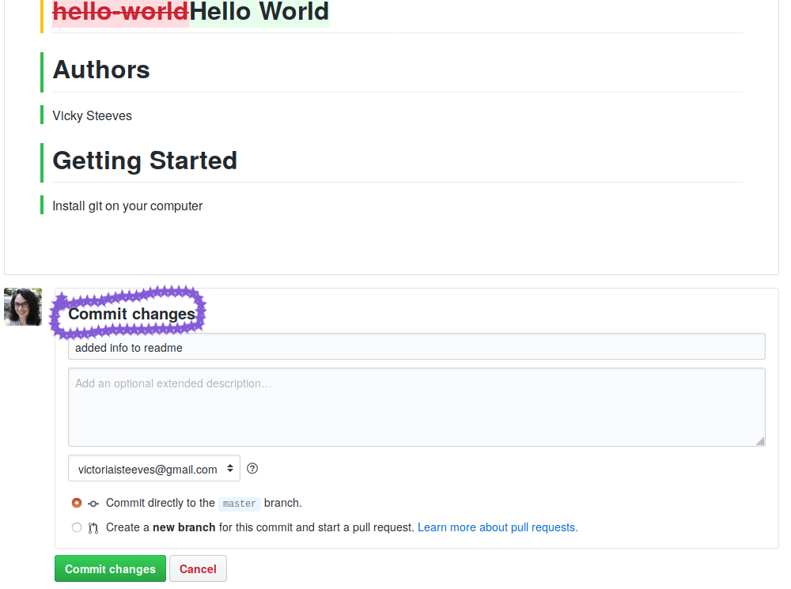Now we can see our changes and our commit history of 2!
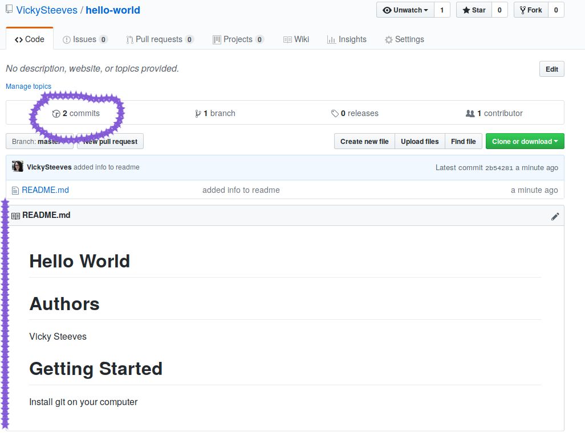Collaborating via GitHub
I'll note here that there are many ways to collaborate on GitHub, from contributing code to discussing things in issues!
There are two main ways to collaborate on code: asking for permission to the repository from the owner (or, if you're doing group work, having one repo for that!) or forking a repository to which you do not have permissions
Let's start with forking and pull requests, since many of us do not have permission to many repos out there!
Forking & Pull Requests
A fork is a copy of a repository. Forking a repository allows you to freely experiment with changes without affecting the original project.
A pull request is when you want to integrate the changes you made into the original repository you forked. You describe the changes you made and make sure your changes don't conflict with the original repo's code.
Intial Fork
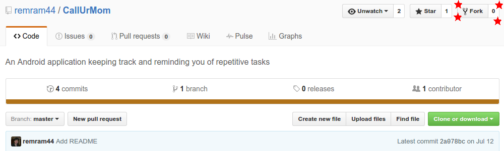 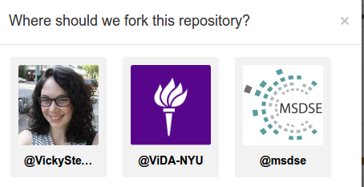Creating your copy...
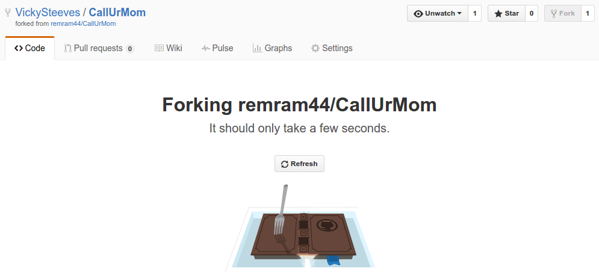Now you have a copy of their repo!
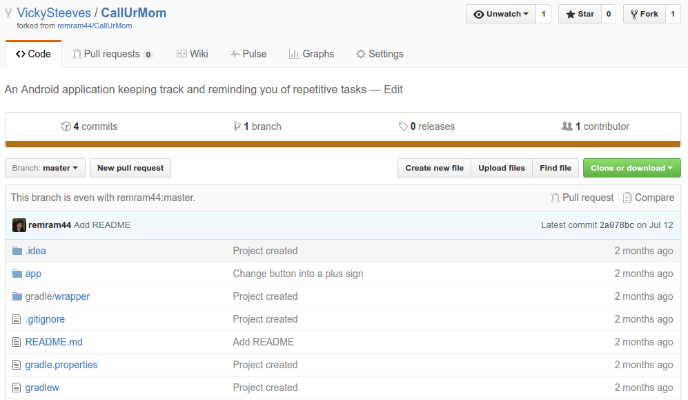Follow the Same Instructions
You can edit and commit files, everything the same, because it's now under your account!
When you want your changes to be integrated into the official repo, you make a pull request!
Make a Pull Request
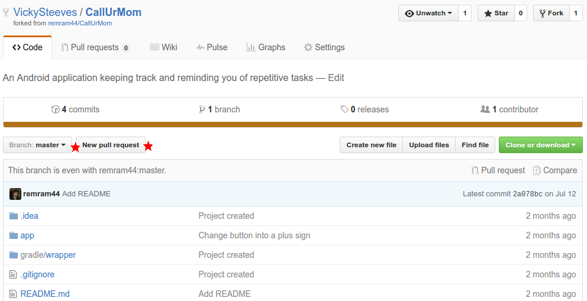Compare your PR to their Repo
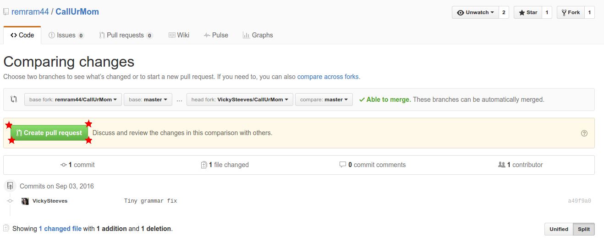Describe Your Changes
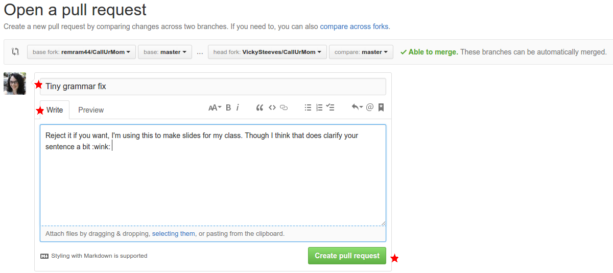Submit the Pull Request!
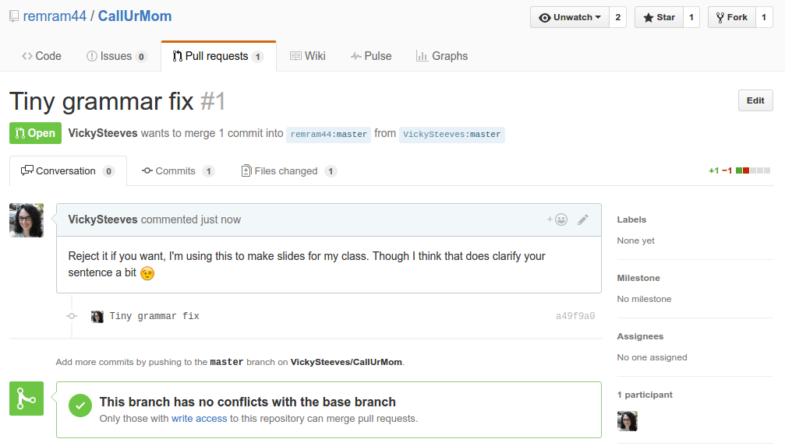Now you try!
Fork my repository: https://github.com/VickySteeves/hello-world
Make a change to my README file
Make a pull request and ask that I integrate your change into my repository!
I will wait until there are 5 pull requests on my repository before moving on.
Collaborating with others on a central repo!
Since the joy of GitHub comes from sharing, let's discover how to collaborate with those we give permission to on here.
- You and the person to your right are now partners. People on the ends, wrap around the right.
- Decide who is "A" and who is "B".
- You will be syncing changes ONLY to person A's repository. Don't do anything yet
- Put up the blue sticky note when you are all set!
First Tasks:
Person A: add person B as your collaborator on GitHub using their GitHub name or email address:
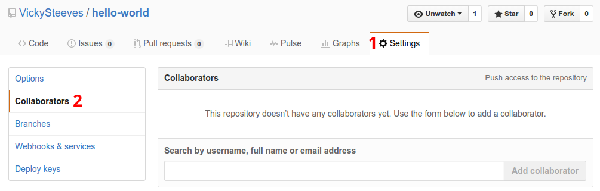